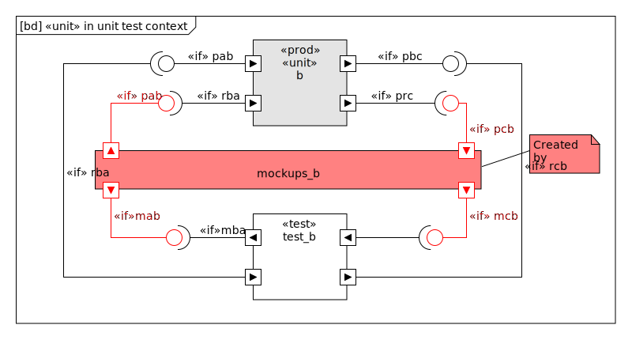

Usecase
Short story
hammocking automatically creates GoogleMocks for your item-under-test in C-code.
Long story
You want to isolate an existing unit written in C for unit testing. This unit may be only one C file, it can also consist of more source files.
The unit has external dependencies. So when isolated, these external dependencies which are
global variables or
global functions
do not exist. You need some “glue code” between your isolated production unit (unit under test) and your test file.
When building the test executable the linker complains about them unless you define them. This you do usually either in the source code of your test file(s) or in dedicated source files or you dedicate special mock source file(s) for that.
Especially when beginning unit testing of large legacy units never have seen test driven developers’ hands it becomes very tedious to do the manual task of …
Filter the linker’s error messages for missing symbols.
For each symbol … * Search through source code to find the declaration of that symbol * Add include of header file where declaration is found to test code * Convert the declaration to a definition and … * If the symbol is a function then write the body to establish the data flow between unit under test and test code (so write a mock, stub or fake).
Our you let hammocking do this job.
